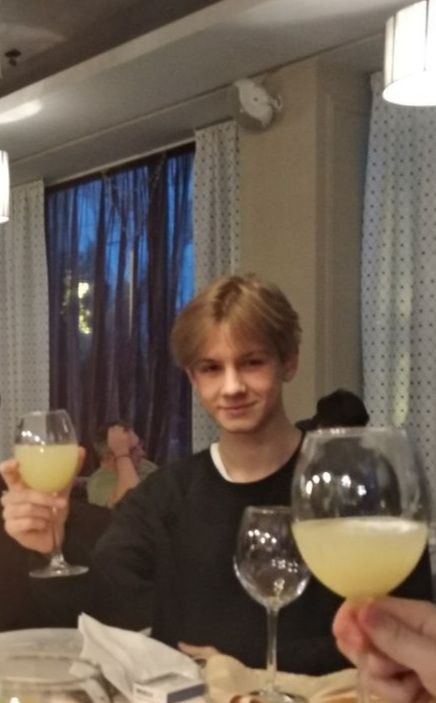

Об авторе
Чубарь Владислав - студент первого курса группы ИС-23б Донецкого Нацианального Технического Университета. На специальности: информационные системы и технологии в технике и бизнесе. Представляет курсовую работу по дисциплине Web-технологии на тему "Программы".